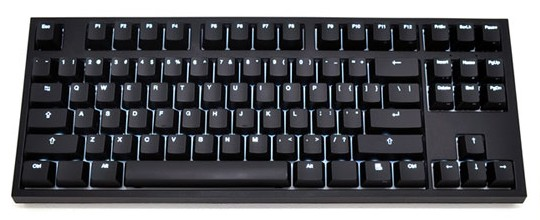
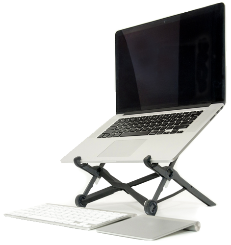

iOS Shells, Prompt vs. Mosh
I’m a big fan of the shell and the productivity it brings, you can have a text editor, command to run a server and more within easy reach. I use a shell at work, at home and on the go. On the go could be using my iPad or iPhone. One of the first SSH clients on iOS was iSSH, which I used many years ago. After this, Panic released a professional class application called Prompt. Prompt is what I’ve happily used for the last few years, but the 10 minute background process limit is a constant pain. Just a quick switch away for a few minutes, and you have to reconnect. That’s fine once or twice, but when it happens many times it seriously slows your productivity.
Plain Text Accounting
For the last few years, I’ve always wanted to budget properly and see where my money was going. But like all habits that are good for you, looking after your finances takes time, care and attention. I started off by researching the market for budgeting software. A lot of the prepackged software out there was very US-centric, including Quicken, Microsoft Money and Mint.com. I eventually settled on and bought a license for You Need a Budget, because: it had a budgeting methodology, very good Euro support and was cross platform with Adobe Air. YNAB lasted me well for a few years, with its pretty graphs and ease of expense entry. I even liked their much pared-down companion iOS app at the time.
Newsfast MSc Project in UCD
As part of my masters degree in University College Dublin, we undertook a group project which focused on building a technology product. I’m very proud about how we ran the project, so I’d like to give an overview of it here! The product is a technology news application, which personalised your news feed based on your interests. I like to think of it as Facebook meets Techmeme meets your favourite RSS news feeds!
Automatic Newsletter Cleanup in Gmail
If you haven’t tried Google Apps Script, I found a really nifty use for it: smart filtering for email. Wait, shouldn’t I just use Gmails’ built-in filters? As it turns out you can’t - my filter needs to act on email that matched that filter in the past. So in other words: a filter can only act on email it actually “filters”, which kinda makes sense! I’m a big fan of automation (and email is ripe for automation), as you can see from my post on meetings in Outlook.
iPad Pro Review
After some thought initially on a new laptop, I decided to spring for an iPad Pro 12.9". So far I am really glad I did, the computer comes with me everywhere. I bring it to work, to visit family, on trips and everywhere in between.
It’s the ultimate work computer in many ways, always with you, light enough and comfortable enough for real work™. The keyboard shortcuts in iOS have improved massively from iOS 8 to iOS 9 to the point of actually being useful and the split screen view is actually rather nice to use (I never “got” it on a Mac).
Remote: Office Not Required
I recently read Remote: Office Not Required by David Heinemeier-Hansson (who created Ruby on Rails) and Jason Fried (who co-founded 37 Signals with Heinemeier-Hansson). This book is really a case study in why the future of work will be remote, of which the book did convince me (but I would say, I already believed).

The book is really structured to convince those who do not believe in the premise of the title. It talks about many successful companies who have transformed themselves to work remotely fully and large corporations who save lots of money on office space (IBM, being one example).
Mechanical Keyboards
Early last year, I purchased two Code Keyboards (one for work and one for home). The Code Keyboards are designed by Jeff Atwood (who founded Stack Overflow). Mechanical keyboards are “old style” in that the switches are from an era where everything was mechanical, unlike today where everything is glass. So mechanical keyboards have ardent fans and people who don’t really care for them.

I did a lot of research before I purchased, talking to various people in work who are very knowledgeable about mechanical keyboards (The best community for advice, discussion and group buys is /r/mechanicalkeyboards on reddit.). The variety of hardware and opinions is positively mind melting. If you are doing your own research, you should definitely come across Cherry switches (a very established German brand). Switches are what sit between your key that you see (with the letter printed on top) and the electronic board that converts the key press to a signal the computer can understand.
Ulysses App
I recently purchased Ulysses Mobile after a recommendation from Macstories. My first impression was how expensive it was priced and what really makes a premium writing application?
Needless to say, I’m not a huge writer. But I do have a real fondness for plain text (it will survive the apocalypse) and by extension, Markdown by John Gruber. The problem for Ulysses is this: there’s lots of really great Markdown applications for iOS, two of which I have written about: Editorial (my favourite) and Byword (not so keen on this app).
Roost Laptop Stand
I backed the Roost laptop stand on Kickstarter, which already had a successful run in their first Kickstarter campaign. I’ve been delighted with the result so far, it lives up to the promises of being super light but yet durable and strong. Here’s a photo of it:

It came with a really nice case which holds the Roost underneath and has pockets for a portable keyboard (I use a Logitech K811) and mouse (I use a Logitech Marathon M705). It works great for a really comfortable and ergonomic desk wherever you may travel (or set up to work). Highly recommended!
Maintainable Software Book
I recently read O’Reilly Building Maintainable Software (Java Edition). It provides good insight as to what to look for to create maintainability in enterpise software systems.
10 suggestions the book provides:
- Write shorter units
- Write simpler units (measured in Cyclomatic Complexity)
- Write code once only
- Keep interfaces very small
- Seperate code in to modules
- Couple modules loosely
- Keep modules evenly sized
- Keep codebase small (and look for ways to right-size)
- Automate development pipeline and your tests
- Write clean code and refactor as you go
Overall I thought the book was very well laid out, easy to read and easy to understand. I’d recommend it to anyone new to software development, but most of the tips contained within the book should be very familiar to the seasoned developer.